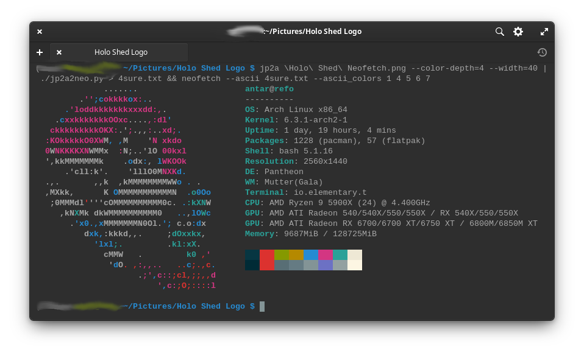

A Font of Text Configurations
Holo Shed OS for the Win4 is going remarkably well. Having a physical keyboard and a "native" landscape display has made the work of developing a bespoke Linux distro way easier than it would have been on the Steam Deck.
Old Man Eyes
Of course, Linuxing on the Win4 does have its downsides in the form of a 6" FHD display that makes the text show up way too small out of the box, at least for my aging eyeballs. X11, GTK/GNOME and Pantheon do all theoretically support "HiDPI" modes and scaling, but those Three Stooges get in each other's way more often than not. Instead, the most reliable solution I've found is grabbing Dconf Editor and just searching for any setting for "font" or "size." Having an interactive tool for this has been ace, by the way, since you can preview (and revert) settings extremwely quickly.
Here's a list of everything I changed (conveniently grabbed
from the CLI by running dconf dump /:
[ca/desrt/dconf-editor]
saved-pathbar-path='/org/gnome/gedit/plugins/externaltools/font'
window-height=443
window-width=894
[desktop/ibus/panel]
custom-font='Sans 14' ; will probably bump this higher
[io/elementary/files/file-chooser]
window-size=(892, 450)
[io/elementary/files/preferences]
sidebar-width=191
window-size=(1000, 680)
[io/elementary/terminal/settings]
font='Monospace 14'
natural-copy-paste=false
prefer-dark-style=true
theme='dark'
[org/gnome/desktop/interface]
cursor-size=36
document-font-name='Open Sans 16'
font-name='Inter 12'
monospace-font-name='SourceCodeVF 16'
scaling-factor=uint32 1
text-scaling-factor=1.0
[org/gnome/desktop/wm/preferences]
titlebar-font='Cantarell Bold 18'
[org/gnome/font-manager]
compare-background-color='rgb(255,255,255)'
compare-foreground-color='rgb(0,0,0)'
compare-list=@as []
content-pane-position=187
google-fonts-background-color='rgb(255,255,255)'
google-fonts-foreground-color='rgb(0,0,0)'
language-filter-list=@as []
selected-category='7:1'
selected-font='13'
window-size=(900, 467)
[org/gnome/font-manager/font-viewer]
preview-font-size=16.0
[org/gnome/gedit/plugins/externaltools]
font='Monospace 14'
[org/gnome/libgnomekbd/indicator]
font-size=12and thats's the Pantheon desktop sorted!
The Console
The TTY consoles was a bit trickier, but
the Arch wiki
came through, as it so often does, and now
everything is a reasonable size, even on first boot,
thanks to an /etc/vconsole.conf of:
FONT=ter-v28bThe Most Important Thing
But speaking of the terminal, easily my biggest accomplishment so far is
that I've made a custom neofetch logo for Holo Shed OS:

Since I'm no ASCII art guru, this was a good-sized project:
- There's a utility called
jp2athat will convert an image to ASCII art - But it does it with ANSI codes
- And
neofetch(which hasn't been updated since 2021) doesn't work with ANSI codes
Enter my own solution: jp2a2neo.py,
a ridiculously simple script to bridge the gap between the two programs:
starting with an image like:
and then running the command:
jp2a logo.png --color-depth=4 --width=48 | ./jp2a2neofetch.py > neofetch_logo.txtresulted in an output I could then paste
directly into the neofetch executable,
yielding the awesome result you see above.
So yeah, I'm feeling pretty proud of myself.